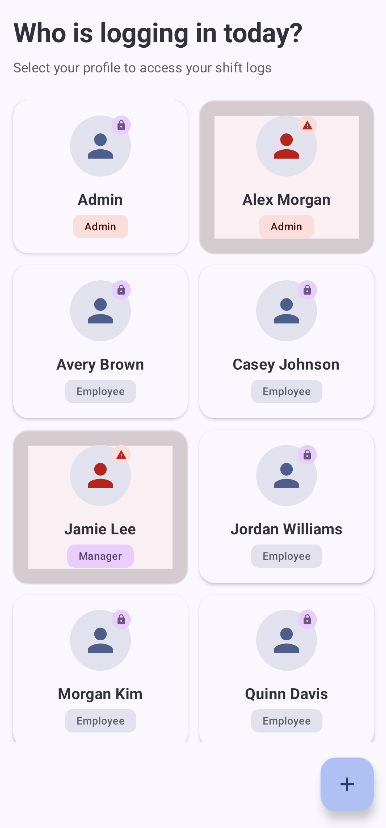

ShiftMemory: A demo internal operations app
This is an example of the type of internal tools we build. Every app is tailored to your workflow—this is only an example.

Team members log in instantly
No complicated setup—see who's working and access their profile in seconds

See what's done, in progress, or missed—instantly
Daily briefs show yesterday's highlights and weekly progress at a glance

Track shifts and tasks in one place
Simple log entry—no confusion, no lost data, everything organized

Complete visibility into daily operations
See what's done, in progress, or missed—all in one view
This is a working demo. We can build something similar customized to your specific workflow.